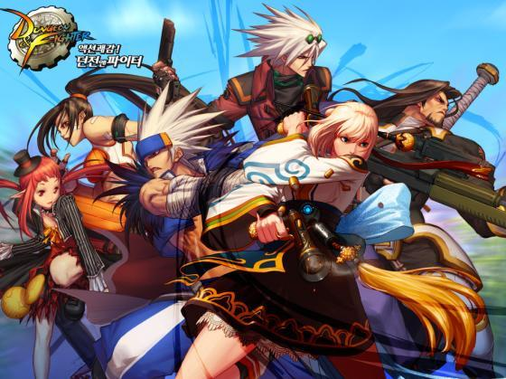

던전앤파이터 사이트 네오플이 제작하고 넥슨에서 서비스하는 벨트스크롤 액션 게임이다. '던전 앤 파이터'라고 띄어쓰기를 하는 경우가 많지만, 넥슨과 네오플에서 사용하는 공식 표기는 띄어쓰기 없는 '던전앤파이터'이다. 약칭은 던파.빠른 플레이'라는 문구에 딱 들어맞는 게임으로, 별다른 생각없이 가볍게 한판 놀 수 있는 오락실 아케이드 게임의 온라인 버전이다.
복잡하게 생각할 것 없이 무작정 던전으로 쳐들어가서 몬스터를 차고, 쏘고, 잡고, 꺾는다는 벨트스크롤 액션 게임 기반 특유의 플레이 방식 덕분에, 간단하게 시간 죽일 수 있는 물건이 그다지 많지 않은 한국 온라인 게임 풍토 속에서 저연령층에서 청장년층까지 폭넓은 유저층을 끌어모으는 인기 게임으로 등극할 수 있었다. 특히 한국과 중국은 안 해본 게이머가 없을 정도. 대부분의 장수 게임이 그렇듯, 현재는 긴 서비스 기간과 몇 번의 대형 사고[2]로 인해 많은 유저들이 빠져나갔고 충성도 높은 하드 유저들이 게임을 지탱하고 있다.
